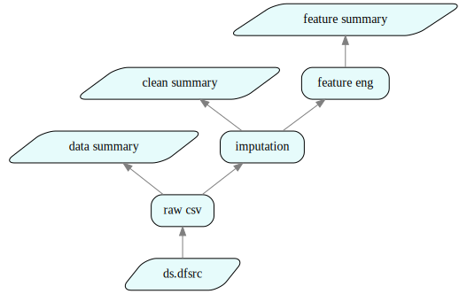

Tutorial 2: Machine Learning
How to use this tutorial
- This tutorial is also available in Jupyter notebook format. To access and run the Jupyter notebook version of the tutorial, please sign up for free developer access at https://juliusgraph.com/user/signup, then go to Julius' developer environment at https://juliusgraph.com.
- Additional resources (video demos & blogs) are available at http://juliustech.co.
- To report bugs or request new features, please raise an issue here. To schedule a live demo, please go to http://juliustech.co. Please email us at info@juliustech.co for other general inquiries.
Introduction
This Tutorial shows how to use the Julius Graph Engine to set up the training and validation of a machine learning model. We will compare several different ML models to predict (or postdict) the survival of Titanic passengers using the classic Titanic data set.
Julius provides a DataScience package, which contains a rich set of functionalities for data sourcing, cleansing, and machine learning. In this tutorial, we will show how to use the DataScience package to quickly build a transparent and sophisticated ML pipeline. This tutorial broadly follows the steps of a data scientist when building a new ML model.
1. Data Processing
1.1 Data Sourcing & Visualization
A data scientist usually starts their project by exploring and visualizing data of various sources. Julius provides a rich set of connectors to multiple data sources and formats, such as CSV, web url, relational databases, hadoop or other NoSQL Databases, etc. Julius also offers many data visualization tools in its interactive web UI.
We start by including the necessary Julia and Julius packages and set up some basic configurations.
# Julia packages
using Base.CoreLogging
using DataFrames, StatsBase
# Julius Packages
using GraphEngine: RuleDSL, GraphVM
using DataScience, AtomExt, GraphIO
# turn off informational logging output
disable_logging(CoreLogging.Info)
# extend the number of displayed columns in Jupyter notebooks
ENV["COLUMNS"] = 100;
# the project is used for web UI display
config = RuleDSL.Config(:project => "Titanic");The dataset can be loaded from a url or a local CSV file via rules in the ds namespace, which is part of Julius' DataScience package. The line commented out is a rule to load the same data from a URL.
rawsrc = RuleDSL.@ref ds.csvsrc("../data/titanic.csv", true; label="raw csv");
# rawsrc = RuleDSL.@ref ds.urlsrc("https://raw.githubusercontent.com/agconti/kaggle-titanic/master/data/train.csv", true; label="raw url")ds:csvsrc/raw csvThe first thing a data scientist often does is to get a summary of the dataset. The following cell shows how it can be done using the ds.datasummary rule in the DataScience package.
rawsummary = RuleDSL.@ref ds.datasummary(rawsrc; label="data summary")
gs1 = GraphVM.createlocalgraph(config, RuleDSL.GenericData());
GraphVM.calcfwd!(gs1, Set([rawsummary]));The data summary results can be retrieved using the GraphVM.getdata method. The data cached in individual graph nodes are all vectors. The last argument 1 is optional, as it selects a given element from the data vector of the node. Without it, the entire vector will be returned.
RuleDSL.getdata(gs1, rawsummary, 1)12 rows × 7 columns
| variable | mean | min | median | max | nmissing | eltype | |
|---|---|---|---|---|---|---|---|
| Symbol | Union… | Any | Union… | Any | Int64 | Type | |
| 1 | PassengerId | 446.0 | 1 | 446.0 | 891 | 0 | Int64 |
| 2 | Survived | 0.383838 | 0 | 0.0 | 1 | 0 | Int64 |
| 3 | Pclass | 2.30864 | 1 | 3.0 | 3 | 0 | Int64 |
| 4 | Name | Abbing, Mr. Anthony | van Melkebeke, Mr. Philemon | 0 | String | ||
| 5 | Sex | female | male | 0 | String7 | ||
| 6 | Age | 29.6991 | 0.42 | 28.0 | 80.0 | 177 | Union{Missing, Float64} |
| 7 | SibSp | 0.523008 | 0 | 0.0 | 8 | 0 | Int64 |
| 8 | Parch | 0.381594 | 0 | 0.0 | 6 | 0 | Int64 |
| 9 | Ticket | 110152 | WE/P 5735 | 0 | String31 | ||
| 10 | Fare | 32.2042 | 0.0 | 14.4542 | 512.329 | 0 | Float64 |
| 11 | Cabin | A10 | T | 687 | Union{Missing, String15} | ||
| 12 | Embarked | C | S | 2 | Union{Missing, String1} |
1.2 Data Cleansing & Imputation
We observe that some columns in the raw data set have missing values. Data imputation and cleansing is the next step of the workflow. Julius' DataScience package provides common data imputation methods, which can be easily invoked using the ds.fillmissing rule with the desired imputation method for each missing field, i.e., we use median value of Age of all passengers for any missing Ages, and the mode value (which is true) for any missing Embarked. The rule ds.fillmissing is generic, it can use any Julia method to fill in missing values, e.g. the StatsBase.median and StatsBase.mode below.
After data imputation, we recompute the data summary, with all the missing values for both Age and Embarked features populated.
cleansrc = RuleDSL.@ref ds.fillmissing(
rawsrc, Dict(:Age => StatsBase.median, :Embarked => StatsBase.mode); label="imputation"
);
cleansummary = RuleDSL.@ref ds.datasummary(cleansrc; label="clean summary")
GraphVM.calcfwd!(gs1, Set([cleansummary]))
RuleDSL.getdata(gs1, cleansummary, 1)12 rows × 7 columns
| variable | mean | min | median | max | nmissing | eltype | |
|---|---|---|---|---|---|---|---|
| Symbol | Union… | Any | Union… | Any | Int64 | Type | |
| 1 | PassengerId | 446.0 | 1 | 446.0 | 891 | 0 | Int64 |
| 2 | Survived | 0.383838 | 0 | 0.0 | 1 | 0 | Int64 |
| 3 | Pclass | 2.30864 | 1 | 3.0 | 3 | 0 | Int64 |
| 4 | Name | Abbing, Mr. Anthony | van Melkebeke, Mr. Philemon | 0 | String | ||
| 5 | Sex | female | male | 0 | String7 | ||
| 6 | Age | 29.3616 | 0.42 | 28.0 | 80.0 | 0 | Float64 |
| 7 | SibSp | 0.523008 | 0 | 0.0 | 8 | 0 | Int64 |
| 8 | Parch | 0.381594 | 0 | 0.0 | 6 | 0 | Int64 |
| 9 | Ticket | 110152 | WE/P 5735 | 0 | String31 | ||
| 10 | Fare | 32.2042 | 0.0 | 14.4542 | 512.329 | 0 | Float64 |
| 11 | Cabin | A10 | T | 687 | Union{Missing, String15} | ||
| 12 | Embarked | C | S | 0 | String1 |
1.3 Feature Engineering
Once the data scientist is happy with the results of the data cleansing and imputation, the next step is feature engineering, which is to add or remove columns from the data set.
In the Titanic data set, we want to drop the columns that should have no correlation to a passenger's survival outcome, such as a passenger's ticket id, name and IDs. Including irrelevant data in the training of a ML model may degrade its performance. The Cabin has aslo been dropped because it has too many missing values to be useful.
Here we create two additional features: 1) the z value of the ticket fare, which is the difference of a passenger's ticket price from the mean price in the unit of standard deviation of all ticket prices; 2) the total number of relatives onboard for a given passenger, which is the sum of the number of siblings (:SibSp) and parents/children (:Parch) onboard.
Feature engineering is supported generically by a rule ds.coltransform in the DataScience package. The following cell shows its usage. The feature engineering can be easily entered as formulae operating on the columns (named by those variables start with :).
newfeatures = quote
:Zfare = (:Fare .- mean(:Fare)) ./ std(:Fare)
:Relatives = :SibSp .+ :Parch
end
dropfeatures = [:Cabin, :Ticket, :PassengerId, :Name]
features = RuleDSL.@ref ds.coltransform(cleansrc, :feature, newfeatures, dropfeatures; label="feature eng")
featuresummary = RuleDSL.@ref ds.datasummary(features; label="feature summary")
GraphVM.calcfwd!(gs1, Set([featuresummary]));The data summary results after feature engineering is therefore:
RuleDSL.getdata(gs1, featuresummary, 1)10 rows × 7 columns
| variable | mean | min | median | max | nmissing | eltype | |
|---|---|---|---|---|---|---|---|
| Symbol | Union… | Any | Union… | Any | Int64 | DataType | |
| 1 | Survived | 0.383838 | 0 | 0.0 | 1 | 0 | Int64 |
| 2 | Pclass | 2.30864 | 1 | 3.0 | 3 | 0 | Int64 |
| 3 | Sex | female | male | 0 | String7 | ||
| 4 | Age | 29.3616 | 0.42 | 28.0 | 80.0 | 0 | Float64 |
| 5 | SibSp | 0.523008 | 0 | 0.0 | 8 | 0 | Int64 |
| 6 | Parch | 0.381594 | 0 | 0.0 | 6 | 0 | Int64 |
| 7 | Fare | 32.2042 | 0.0 | 14.4542 | 512.329 | 0 | Float64 |
| 8 | Embarked | C | S | 0 | String1 | ||
| 9 | Zfare | -1.76938e-17 | -0.648058 | -0.35719 | 9.66174 | 0 | Float64 |
| 10 | Relatives | 0.904602 | 0 | 0.0 | 10 | 0 | Int64 |
The entire data processing steps we performed so far can be visualized interactively in the Julius web UI by clicking the link below. All the intermediate data is accessible from the web UI.
# start data server for web UI
gss = Dict{String,RuleDSL.AbstractGraphState}()
port = GraphVM.drawdataport()
@async GraphVM.startresponder(gss, port)
svg = GraphIO.postlocalgraph(gss, gs1, port, true; key="data");
GraphIO.postsvg(svg, "titanic_1.svg")view graph data at http://127.0.0.1:8080/ui/depgraph.html?dataurl=127.0.0.1:7528_data
starting data service at port 7528

Figure 1 - Data Sourcing, Cleansing & Feature Engineering
2. Experiment with multiple ML models
Once the data scientist is happy with the results of data cleansing, imputation and feature engineering, the next step is to try multiple ML models and see how they perform on the data set.
Julius Graph Engine can interop with existing Python, Java, C++ and R libraries via the generic Atom interface, making it seamless to access the rich set of ML models in these ecosystems.
For example, the following rules leverage the Python ML libraries, such as sklearn and xgboost, by using the PyTrain atom provided in the DataScience package. The first parameter of the PyTrain atom is the full name of the Python ML class to use. The second parameter is a Dictionary with the corresponding parameters/options/arguments to that Python ML class.
@addrules ds begin
classifiertrain(model::Val{:SVC}, options::Dict, traindat::NodeRef) = PyTrain["sklearn.svm.SVC", options](traindat...)
classifiertrain(model::Val{:DecisionTree}, options::Dict, traindat::NodeRef) = PyTrain["sklearn.tree.DecisionTreeClassifier", options](traindat...)
classifiertrain(model::Val{:RandomForest}, options::Dict, traindat::NodeRef) = PyTrain["sklearn.ensemble.RandomForestClassifier", options](traindat...)
classifiertrain(model::Val{:AdaBoost}, options::Dict, traindat::NodeRef) = PyTrain["sklearn.ensemble.AdaBoostClassifier", options](traindat...)
classifiertrain(model::Val{:MLPC}, options::Dict, traindat::NodeRef) = PyTrain["sklearn.neural_network.MLPClassifier", options](traindat...)
classifiertrain(model::Val{:GaussianNB}, options::Dict, traindat::NodeRef) = PyTrain["sklearn.naive_bayes.GaussianNB", options](traindat...)
classifiertrain(model::Val{:XGBoost}, options::Dict, traindat::NodeRef) = PyTrain["xgboost.XGBClassifier", options](traindat...)
classifiertrain(model::Symbol, options::Dict, traindat::NodeRef; label = "$model-train") = Alias(classifiertrain(val(model), options, traindat))
endWe now proceed to train multiple ML models and compare their in-sample and out-of-sample performance using various performance metrics, such as Gini. We first define the list of models we want to compare and their hyperparameters.
The ML models are trained to predict the survival probability of Titanic passengers. The target variable name for ML prediction is also given below.
models = [
:DecisionTree => Dict(:min_samples_leaf => 0.1),
:LogisticRegression => Dict(:solver => "saga", :max_iter => 200),
:AdaBoost => Dict(),
:XGBoost => Dict(),
:GradientBoost => Dict(:min_samples_leaf => 0.1),
:RandomForest => Dict(:min_samples_leaf => 0.1),
:GaussianNB => Dict(),
];
yname = :Survived;To divide the input dataset for training and validation, we use the randrowsel rule from the DataScience package, which randomly selects a portion of the input data as the validation set, while the rest is used for training. The parameter 1/3 is the fraction of rows that are reserved for validation.
valind = RuleDSL.@ref ds.randrowsel(cleansrc, 1 / 3);DataScience.ClassifierSpec is a generic struct that holds all the configurations for training and validating binary classifiers, such as those we have defined so far. It is more convenient and readable to pass a ClassifierSpec object to a rule than having to pass five separate parameters. The ClassifierSpec can be used for any binary classifier problems on data sets. The last parameter to the ClassifierSpec constructor is a tuple representing the feature engineering.
cspec = DataScience.ClassifierSpec(models, cleansrc, yname, valind, (:feature, newfeatures, dropfeatures));Now we can proceed and use the ds.classifiermetrics rule, which is also part of DataScience, to compute in-sample and out-of-sample metrics for each model.
metrics = [:gini, :roc, :accuracyrate, :accuracygraph]
basem = RuleDSL.@ref ds.classifiermetrics(cspec, metrics)
gs2 = GraphVM.createlocalgraph(config, RuleDSL.GenericData())
@time GraphVM.calcfwd!(gs2, Set([basem])); 38.268570 seconds (39.42 M allocations: 2.249 GiB, 2.74% gc time, 29.31% compilation time)
We can retrieve in-sample and out-of-sample performance metrics. For example, the GINIs:
giniref = RuleDSL.@ref ds.classifiermetric(cspec, :gini)
gini = GraphVM.getdata(gs2, hash(giniref), 1)
ginidf = DataFrame(model=gini[:InSample][!, :Model], InSample_GINI=gini[:InSample][!, 2], OutSample_GINI=gini[:OutSample][!, 2])7 rows × 3 columns
| model | InSample_GINI | OutSample_GINI | |
|---|---|---|---|
| String | Float64 | Float64 | |
| 1 | DecisionTree | 0.713227 | 0.648617 |
| 2 | LogisticRegression | 0.5343 | 0.566336 |
| 3 | AdaBoost | 0.842805 | 0.609789 |
| 4 | XGBoost | 0.992137 | 0.727238 |
| 5 | GradientBoost | 0.821852 | 0.700116 |
| 6 | RandomForest | 0.701924 | 0.631612 |
| 7 | GaussianNB | 0.683596 | 0.596686 |
The entire data and logic can be visualized by clicking on the URL below.
svg = GraphIO.postlocalgraph(gss, gs2, port, false; key="ml");
GraphIO.postsvg(svg, "titanic_2.svg")view graph data at http://127.0.0.1:8080/ui/depgraph.html?dataurl=127.0.0.1:7528_ml

Figure 2 - Machine Learning
The entire ML pipeline includes all the steps we have defined so far, including data sourcing, imputation, feature engineering, training of multiple ML models and the computation and reporting of performance metrics. A data scientists only need to invoke a few rules defined in DataScience package to construct this realistic ML pipeline, with a total of 83 nodes in the graph, as shown below.
dg = GraphVM.mygraph(gs2)
println(length(dg._items))83
3. Hyperparameter Tuning
Once a data scientist narrows down the choice of ML models to a few, the next step is to select the optimal hyperparameters for these candidate ML models.
The Julius Graph Engine provides a generic rule hypertune for hyperparameter tuning of any ML model. This shows the power of high level rules, where a single hypertune rule can perform hyperparameter tuning for any ML model.
For example, for a given machine learning model, we can select a range for a set of hyperparameters and easily perform a grid search and report the corresponding metric results:
ht_1 = RuleDSL.@ref ds.hypertune(cspec, :XGBoost, Dict(), :gini, :n_estimators => 50:50:200);
ht_2 = RuleDSL.@ref ds.hypertune(cspec, :AdaBoost, Dict(), :gini, :n_estimators => 50:50:200);
ht_3 = RuleDSL.@ref ds.hypertune(cspec, :GradientBoost, Dict(), :gini, :n_estimators => 50:50:200, :min_samples_leaf => .05:.05:.2);
ht_4 = RuleDSL.@ref ds.hypertune(cspec, :RandomForest, Dict(), :gini, :n_estimators => 50:50:200, :min_samples_leaf => .05:.05:.2);The hypertune rule support arbitrary number of dimensions in parameters search. Additional search dimensions can be added to the ds.hypertune rule by appending extra pairs of hyperparameter => searchgrid to rule parameters. We can then wrap all the hyperparameter searches in a single node for convenience by means of an alias rule which uses the Alias atom:
tunings = RuleDSL.@ref ds.alias([ht_1, ht_2, ht_3, ht_4]; label="Hyperparameter Tuning")ds:alias/Hyperparameter TuningNow proceed with the computation of all the defined hyperparameter tunings:
gs3 = GraphVM.createlocalgraph(config, RuleDSL.GenericData());
@time GraphVM.calcfwd!(gs3, Set([tunings])); 21.068837 seconds (13.34 M allocations: 834.166 MiB, 1.86% gc time, 28.70% compilation time)
The following cell shows the resulting in-sample and out-of-sample GINI from the different hyperparameters for GradientBoost:
dat = GraphVM.getdata(gs3, hash(ht_3))
df = deepcopy(dat[1][:, 1:2])
df[!, :InSampleGINI] = dat[1][!, 3]
df[!, :OutSampleGINI] = dat[2][!, 3]
df16 rows × 4 columns
| n_estimators | min_samples_leaf | InSampleGINI | OutSampleGINI | |
|---|---|---|---|---|
| Int64 | Float64 | Float64 | Float64 | |
| 1 | 50 | 0.05 | 0.814205 | 0.741055 |
| 2 | 50 | 0.1 | 0.755239 | 0.753385 |
| 3 | 50 | 0.15 | 0.747088 | 0.742534 |
| 4 | 50 | 0.2 | 0.695141 | 0.716124 |
| 5 | 200 | 0.05 | 0.898522 | 0.733701 |
| 6 | 200 | 0.1 | 0.853943 | 0.742758 |
| 7 | 200 | 0.15 | 0.819619 | 0.728455 |
| 8 | 200 | 0.2 | 0.750672 | 0.722222 |
| 9 | 100 | 0.05 | 0.852437 | 0.746704 |
| 10 | 100 | 0.1 | 0.809874 | 0.743566 |
| 11 | 100 | 0.15 | 0.781661 | 0.738454 |
| 12 | 100 | 0.2 | 0.722048 | 0.72007 |
| 13 | 150 | 0.05 | 0.880911 | 0.741727 |
| 14 | 150 | 0.1 | 0.838759 | 0.740606 |
| 15 | 150 | 0.15 | 0.80634 | 0.735853 |
| 16 | 150 | 0.2 | 0.737181 | 0.72415 |
A data scientist has to exercise sound judgment in selecting the optimal hyperparameter set, which may have to balance multiple objectives. The parameter set with the maximum out-of-sample GINI may not be the best choice. Often, it is better to choose the parameter set with similar in-sample and out-of-sample GINI to minimize the chance of overfitting.
The details of hyperparameter search can be visualized by clicking the url below.
svg = GraphIO.postlocalgraph(gss, gs3, port, false; key="hyper");
GraphIO.postsvg(svg, "titanic_3.svg")view graph data at http://127.0.0.1:8080/ui/depgraph.html?dataurl=127.0.0.1:7528_hyper

Figure 2 - Machine Learning
4. Conclusions
It only takes a few lines of code in Julius to build a sophisticated Data and ML pipeline, by leveraging the existing rules and atoms provided by the DataScience package. Even though the titanic data set is small, the ML pipeline built in this tutorial is quite representative; it features the essential elements of a real world ML pipepline such as data cleansing, imputation, feature engineering, model performance monitoring and hyper parameter tuning.
The ML pipeline built by Julius is fully transparent, allowing data scientists to easily visualize and explore data in every intermediate step, all from Julius' web UI. Julius also offers full data lineage and explainability. A data scientist can easily query and trace how a piece of data is sourced, modified and used throughout the entire ML pipeline, making it easy to explain and audit the ML output.
In the next tutorial "distributed ML pipeline", we will show how to deal with very large data sets that does not fit into memory.
This page was generated using Literate.jl.